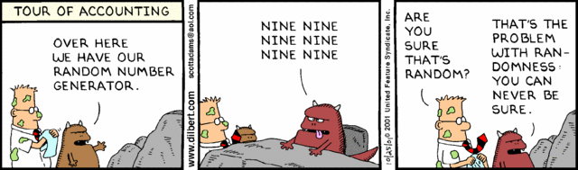

-
v0.1, Sept 15, 2012 : Initial version
-
v0.2, Sept 17, 2012 : Add some major explanation about list, fonctions, indentation, etc.
-
v0.3, Sept 18, 2012 : Add information for ubuntu and windows install, add some minor fixes on source code, add some new links
-
v0.4, Sept 19, 2012 : Add section with information for POO, ROGLike exercices instruction and exemple
-
v0.5, Sept 20, 2012 : Add new information for POO
-
v0.6, Oct 2, 2012 : Add information for Labyrinthe exercice
-
v0.7, Sept 20, 2013 : Add link to visualize program execution, correcting syntax, add pycharm IDE information, modify Ubuntu information
-
v0.8, Sept 26, 2013 : Some new corrections, add a "Rendu" part, add "insert" function for list, add information into POO part, remove labyrinth old information
-
v0.9, Sept 27, 2013 : Add mini games instruction
-
v0.10, Sept 27, 2013 : Add information about cd command and folder to find Pycharm
-
v0.11, Oct 13, 2013 : Add POO information and exercices
-
v0.13, Oct 22, 2013 : Add POO information about inheritance and composition ; remove old version of Rogue
-
v0.14 Sept 18, 2014 : Remove Roguelike; add Adrien van hamme
-
v0.15 Sept 18, 2015 : Separate Windows / Linux
-
v0.16 Fev, 2016 : Add Naval Battle
-
v0.17 Nov, 2016 : Add exercices and informations for POO pirates
-
v0.18 Nov, 2017 : Add new step of amelioration for Naval Battle
-
v0.19 Nov, 2017 : New version of POO information and exercices
-
v0.20 Nov, 2018 : Update to Python 3.0 :)
Introduction au document
Cette longue introduction doit vous servir de point de départ pour vous lancer ensuite par la suite dans des développements python plus lourds.
Construit de façon dynamique, disponible en ligne, celui çi sera probablement mis à jour plusieurs fois durant cette semaine, et cela pour plusieurs raisons :
-
si vous voyez des fautes, des coquilles, soyez gentils, ne m’insultez pas et faites moi signe, je corrigerai :)
-
ce document sera nourri par vos remarques, vos questions durant les Tp
-
Etre capable de lire un code inconnu et de le comprendre
-
Etre capable de chercher une information et de "poser une question" sur Internet et les sites spécialisés
-
Etre capable de concevoir et de réaliser un programme simple
-
Etre capable de travailler en groupe
Ce tutorial a pour but de vous faire travailler rapidement sur Python, et donc masque un certain nombre de questionnements théoriques.
De très nombreuses ressources existent pour vous éclairer sur Internet, et ce tutorial est un pot-pourri des informations que l’on peut trouver partout facilement, car Python est un langage extremement populaire,
J’essaierai d’en lister un certain nombre dans l’onglet ressource tout en bas de page.
Le langage python

Présentation rapide
Python est un langage intéressant pour plusieurs raisons, à la fois technique :
-
Il est interpreté (ligne par ligne), et portable facilement (windows, linux)
-
Le typage est dynamique (pas besoin d’indiquer le type de votre variable…)
-
Tout est objet en python (c’est à dire possède des attributs et des fonctions)
-
Il existe de très nombreuses librairies logicielles qui étendent le langage dans plusieurs domaines
-
Il permet à la fois de créer de petits programmes (scripts réalisant/automatisant de petites tâches), tout comme de très gros programmes ou logiciels
-
Python permet de mixer différents paradigmes de programmation : objet et fonctionel
et pédagogique :
-
python est connu comme un langage "fun"
-
La documentation originale est de grande qualité
-
La communauté utilisateur est très grande (poser des questions et se procurer de la documentation gratuite est facile)
-
Le système d’indentation (le décalage à chaque ligne) est un bon guide à l’apprentissage, et favorise la lisibilité du code source
-
La courbe d’apprentissage est très rapide avec ce langage, finalement assez proche du pseudo-code
-
De nombreux logiciels ou systèmes proposent une API en Python pour ajouter des extensions/plugins, et réaliser des traitements automatisés
-
Comme pour le langage R, une très forte communauté s’est formée en science autour de librairies/packages extension du langage : numpy, scipy, matplotlib etc.
-
Des outils pour visualiser l’execution des programmes (vous pouvez en abuser pour comprendre et débugger vos programmes !) : http://pythontutor.com/visualize.html
Je ne rentrerai pas plus dans le détail sur les aspects techniques du langage pour ne pas vous noyer trop vite d’informations.
|
Toutefois, pour les plus curieux, quelques liens pour aller plus loin :
|
Utilisation/Usages
Python est un langage clairement à la mode, du fait qu’il est simple à utiliser et à étendre, ainsi on le retrouve un peu partout dans différents domaines :
-
Mathématiques
-
Intelligence artificielle
-
Education
-
Jeux
-
Sécurité et Système d’exploitation
Quelques exemples d’utilisation de python spécifique en géomatique :
-
ArcGis 10
-
GeoDjango
-
Accès Postgis avec Psycopg2
-
librairie Numpy
-
librairie GDAL et OGR
-
librairie Geopy
-
librairie Shapely
-
etc.
Installation de Python
Sous Ubuntu
Ubuntu est un système d’exploitation libre, et open-source, alternatif à Windows, et qui peut être installé sur n’importe quel ordinateur.
Une des grandes forces c’est la mise à disposition des utilisateurs d’un système de gestion de paquets offrant l’installation en quelques clics d’un très grand nombre de logiciels, ou paquets, par rapport à son principal concurrent Windows.
L’autre force, qui pourra au demeurant vous faire penser à une faiblesse, est la mise à disposition d’un logiciel appelé Terminal, dans lequel l’utilisateur peut taper un très grand nombre de commandes, qui vont de l’installation d’un paquet à une infinité d’autres choses.

Ainsi par exemple, et pour vous donner un apercu du bonheur qu’il y a pour un développeur à travailler sous Ubuntu au jour le jour, Python est natif. C’est à dire déjà installé et déjà accessible par une simple commande dans un Terminal. Joie !
Si vous ne me croyez pas, jetez un oeil à la procédure d’installation sous Windows.

Les autres éléments, comme les librairies, peuvent être installées dans le terminal, via une commande simple :
$> sudo apt-get install python-pygame
$> représente le prompt de votre terminal, qui contient des informations sur le répertoire dans lequel vous vous trouvez..
|
|
Si vous possedez les droits administrateur sur votre machine, alors vous pouvez voir une liste des autres packages python disponibles sous ubuntu avec le paquet ou : |
|
Pour installer d’autres modules dans python, il existe plusieurs solutions :
|
|
Il existe de nombreux paquets python en rapport avec la géomatique dont vous pouvez partir à la chasse, voici quelques listes faites par des utilisateurs :
|
Quelques commandes utiles pour le terminal :
$> pwd$> cd nomDeMonRepertoire$> cd ..$> ls| Vous pouvez appuyer sur la flêche HAUT de votre clavier numérique pour rapeller des commandes précédemment tapées et les modifier par la suite (idem dans l’interpreteur python) |
| En appuyant sur la touche TAB deux fois lors de l’écriture de vos commandes, vous pouvez obtenir des informations de complétion. |
D’autres commandes existent bien sur, et pourront vous servir lors de vos futurs développements, voici un lien contenant de nombreux exemples et une liste plus exhaustive.
En savoir plus sur Ubuntu:
Et pour aller plus loin avec QGIS et les plugin python pour GDAL / OGR ( http://pypi.python.org/pypi/GDAL/ )
$> sudo apt-get install python-software-properties
$> sudo add-apt-repository ppa:ubuntugis/ubuntugis-unstable
$> sudo apt-get update
$> sudo apt-get install qgis
$> sudo apt-get install gdal-bin
$> sudo apt-get install python-gdal
$> sudo apt-get install python2.7-qgisSous Windows
Sous windows, l’installation est un poil plus délicate que sous Linux ou Ubuntu.
Je vous conseille de choisir plutôt une installation sous forme de packages pré-installés, du type de pythonXY, anaconda, osgeo4w car l’installation des modules supplémentaires un à un peut vite devenir cauchemardesque !
|
Quelques ressources :
|
Une autre solution envisageable, pas forcément plus complexe qu’une installation qui se passe mal sous windows, passe par l’installation d’une machine virtuelle avec Ubuntu sous windows. L’avantage c’est qu’une fois Ubuntu installé ainsi, vous allez pouvoir profiter de tout un tas d’outils de développement beaucoup plus facilement que sous windows !!
|
Quelques ressources/ tutoriaux
|
Mon premier programme en python
Il existe deux façon d’écrire et d’éxecuter un programme python :
-
en mode interactif : l’utilisateur saisit les commandes les unes après les autres, et l’interpréteur execute/évalue chacunes d’elle au fur et à mesure de leur saisie.
-
ou en mode execution : on execute une grosse portion de code stocké dans un ou plusieurs fichier, en une seule commande.
Les deux prochaines sections interpréteur de commande (mode interactif) et Executer un bloc de code entier (mode exécution) s’appuient sur l’utilisation du programme Python. Il est en effet le seul qui peut comprendre les programmes que vous écrirez dans ce langage.
Ces deux modes d’utilisation du programme python suffisent pour écrire des programmes, mais offre un confort très relatif. On préférera utiliser un IDE (qui se base sur le mode exécution), comme décrit dans la troisième section En utilisant l’IDE Pycharm.
En utilisant l’interpréteur de commande Python
Sous windows
Pour accéder à un terminal windows, cliquez sur le bouton Démarrer, puis cherchez l’outil invite de commande aussi nommé cmd (voir wikipedia et liste des commandes )
L’executable de Python 2.7 se trouve généralement dans le répertoire c:\Python27 , pour cela vous devez vous déplacer dans l’invite de commande avec les commandes suivantes :
dircd nomDeMonRepertoirecd ..cd c:\Python27Une fois dans le répertoire c:\Python27, vous pouvez ensuite taper python, ce qui aura pour effet de lancer l’intepreteur de commande en mode console interactif.
> python
ActivePython 2.6.5.12 (ActiveState Software Inc.) based on
Python 2.6.5 (r265:79063, Mar 20 2010, 14:22:52) [MSC v.1500 32 bit (Intel)] on win32
Type "help", "copyright", "credits" or "license" for more information.Toutes les commandes que vous tapez dans ce mode interactif doivent être en python pour être comprise par l’interpréteur Python. Une ligne n’est évalué que lorsque vous tapez Entrée.
>>> print "Hello World"
hello worldPour quitter ce mode interactif et revenir dans l'invite de commande, vous pouvez taper exit() ou Ctrl+D
Sous linux
Pour accéder à un terminal linux, cliquez sur l’onglet en haut à gauche avec une roue, et écrivez "Terminal" Vous pouvez ensuite taper "python" dans le terminal linux, ce qui aura pour effet de lancer l’intepreteur de commande en mode console interactif.
> python
ActivePython 2.6.5.12 (ActiveState Software Inc.) based on
Python 2.6.5 (r265:79063, Mar 20 2010, 14:22:52) [MSC v.1500 32 bit (Intel)] on win32
Type "help", "copyright", "credits" or "license" for more information.Chaque commande que vous allez taper dans l’interpreteur de code python sera évaluée :
>>> print "Hello World"
hello worldPython vous renvoie le résultat de votre commande à chaque fois qu’il a réussi à l’évaluer, sinon il vous renvoie une erreur.
| Pour quitter la console python sous Ubuntu, appuyer sur la combinaison de touche : Ctrl+D |
Executer un bloc de code entier
Pour le mode execution nous allons écrire nos programmes au préalable dans un document nommé avec l’extension .py dans le repertoire de votre choix. Vous devez ouvrir une invite de commande (windows), ou un terminal (linux) et vous positionner ensuite dans ce répertoire avec les commandes adéquates propre au système que vous utilisez(cd, dir, etc.)
Si vous êtes sous linux, alors vous pouvez directement taper python nomduprogramme.py dans le terminal.
Si vous êtes sous windows, alors il faut remplace python nomduprogramme.py par la commande suivante C:\Python27\python nomduprogramme.py dans les programmes ci-dessous.
-
Créer un fichier hello.py
-
Ecrire dans ce fichier le texte suivant :
hello.py# -*- coding: utf-8 -*- print "Hello World" -
Enregistrer et fermer le programme
-
Executer le programme ainsi dans la ligne de commande python
python hello.pyRéouvrez ensuite votre fichier hello.py et ajoutez la ligne suivante :
print "Hello World"
print Bonjour MondeOn redemande à l’interpréteur de lire notre programme :
python hello.pyCelui-ci renvoie une erreur que nous allons apprendre à lire :
python hello.py
File "hello.py", line 2
print Bonjour Monde
^
SyntaxError: invalid syntaxL’interpréteur vous donne la ligne et la faute : la syntaxe pour print est incorrecte, car il manque les guillemets
| "Hello World" est le programme le plus connu des informaticiens, cf. http://en.wikipedia.org/wiki/Hello_world_program |
| Python est sensible à la casse, il faut donc faire attention aux majuscules / minuscules dans votre programme. |
| Pour ne pas avoir de problème avec les accents, pensez à ajouter la ligne suivante au tout début de votre programme : # -- coding: utf-8 -- |
En utilisant l’IDE Pycharm
Pour éditer le document une fois créé nous allons utiliser un IDE nommé Pycharm (Windows, Linux, MacOSX) disponible ici
Vous pouvez plus simplement utiliser un éditeur de texte, mais un IDE fournit des fonctions avancées facilitant votre vie de développeur.
Pycharm est un excellent IDE compatible avec Windows, Mac et Linux,
téléchargeable gratuitement sur le site
Installation sous Windows
L’installation de Pycharm est relativement simple sous windows.
Python doit d’abord être installé sur l’ordinateur (voir section installation de python)
Il suffit ensuite de télécharger la version community ou education sur le site, puis de lancer l’installation.
Une fois installé, vous pouvez lancer Pycharm, qui vous demandera de configurer l’interpréteur python que vous voulez utiliser par défaut. Sous windows, celui-ci se trouve généralement dans c:\Python27\python.exe.
Installation sous Ubuntu
Sous Ubuntu, il n’y a pas d’installeur du logiciel comme sous windows.
Celui çi se présente sous la forme d’une archive (au format .tar.gz), et d’un executable qu’il faut lancer depuis le répertoire /bin/ du dossier une fois extrait.
-
Crééer un répertoire
pycharmà la racine de votreDossier personnel -
Télécharger
Pycharm Educationici : http://www.jetbrains.com/ -
Extraire l’archive
.tar.gzdans un répertoirepycharmque nous avons créé dans votre espace personnel -
Ouvrir le Terminal (celui çi s’ouvre à la racine de votre
Dossier personnel, la commandelsvous le confirmera) -
Se déplacer avec la commande
cddans le bon répertoire :cd pycharm/, puiscd pycharm-edu-2.0/, puiscd bin/ -
Puis tapez
sh pycharm.shdans le terminal pour lancer le logiciel !
Configurer l’interpréteur python (windows/ubuntu)
Pycharm a besoin de savoir ou se trouve le programme Python pour executer les programmes. Pour configurer l’interpreteur si cela n’est pas déjà fait par défaut, vous pouvez aller dans les préférences du logiciels.

Et choisir l’interpréteur Python que vous souhaitez utiliser pour votre projet : 2.7 ou 3.0

Pour lancer un programme python, il suffit de faire un clic droit sur le fichier python que vous voulez executer, et de cliquer sur run

Indentation
Python utilise l’indentation pour définir le corps des blocs d’instruction.
Il n’y a pas donc pas d’instruction FIN POUR , FIN TANT QUE, FIN FONCTION, etc.
L’indentation se fait avec des espaces (4 espaces par niveau d’indentation), ou avec des tabulations (1 tabulation). Toutefois, pour ce cours, nous choisirons d’utiliser des tabulations car les erreurs sont plus faciles à voir.
Regarder le code ci-dessous sans forcément faire attention à ce qu’il veut dire, voici en général à quoi ressemble un programme python classique avec ses différents blocs d’indentation.
|
Pycharm possède un super outil qui permet de corriger une indentation défectueuse de façon très simple.
|
import random
a = random.randint(0,5)
b = random.randint(0,5)
if a >= 3: (1)
print("a = ", a, " superieur a 3")
if b >= 2: (2)
print ("b = ", b, " superieur a 2")
b = b * 2
(3)
else:
print("a = ", a , "<= 3") (4)
(5)
print("b = ", b)| 1 | Premier niveau d’indentation pour définir le corps de la fonction |
| 2 | Deuxième niveau d’indentation pour définir le corps du bloc if |
| 3 | La fin de l’indentation pour le if du point 2. |
| 4 | Indentation pour le bloc else |
| 5 | Fin d’indentation du premier if du point 1. |
| Il ne faut pas mixer les espaces et les tabulations |
|
Les informations sur le style à adopter pour les commentaires, l’indentation, etc sont définis dans une guideline : http://www.python.org/dev/peps/pep-0008/ |
|
Plus d’informations ici aussi : http://diveintopython.adrahon.org/getting_to_know_python/indenting_code.html |
Variables, Objets et Références
Généralités
-
Les variables commencent par un caractère et peuvent ensuite contenir des chiffres
-
La casse est importante en python,
maVariableest différent demavariable -
Généralement, pour le nom des variables, des objets, des méthodes, on utilise le camelCase : on commence par une minuscule, et on marque les changements de mot par une majuscule.
-
Les variables doivent porter des noms compréhensibles !!
tempn’est pas un bon nom de variable -
Il y a 29 mots-clef en python, qui ne seront pas compris par l’interpréteur comme des variables mais bien comme des instructions spéciales :
and |
def |
exec |
if |
not |
return |
assert |
del |
finally |
import |
or |
try |
break |
elif |
for |
in |
pass |
while |
class |
else |
from |
is |
yield |
| Vous remarquerez que la commande print fait partie des mots-clef ou statements en anglais, ce n’est donc pas une fonction mais bien un élément du langage. |
Affectation
Une variable est affectée avec le signe =
Une variable doit être initialisée puis affectée une première fois pour pouvoir ensuite être utilisée dans un programme
nbJambes = 2
couleurYeux = "marron"| Affecter est le terme correct pour indiquer l’initialisation d’une variable avec une valeur |
| Pensez à utiliser le plus souvent possible cet outil pour visualiser l’execution des programmes, cela permet de mieux comprendre et débugger vos programmes !) : http://pythontutor.com/visualize.html |
En réalité le modèle d’affectation de python est un peu différent des autres langages, au sens où python manipule des références et distingue nettement le nom d’une variable, et sa valeur. La référence est donc le lien qui relie les deux objets python : nom et valeur !
Prenons un exemple simple :
a = 3En réalité que se passe-t-il lors de cette affectation :
-
Python crée un objet ayant une valeur 3
-
puis la variable de nom "a" est créée si elle n’existe pas déjà
-
enfin python relie l’objet ayant la valeur 3 avec la variable de nom "a"

Que se passe-t-il lors d’une ré-affectation ?
a = 3 # a est un nombre
a = "test" # puis il devient du texteL’objet contenant la valeur 3 n’est plus lié à la variable a donc il disparait, et il ne peux plus être appelé par la suite !
Comment cela se passe-t-il lorsque j’observe un objet et des références partagés ?
a = 3 # a est un nombre
b = a # b est un nombre
En réalité il existe toujours un seul objet contenant la valeur 3, et la référence est partagée, reliant la variable a et la variable b au même objet en mémoire.
Ouis mais dans ce cas, que se passe-t-il si je change la valeur de a ????
a = 3 # a est un nombre
b = a # b est un nombre
a = "test" # b vaut il "test" ou 3 à ce moment là ?Et bien en fait, cela dépend des cas.
Tout objet dans Python est classifié en deux catégories, mutable ou immutable
Dans le cas des objets dit immutables, python crée un nouvel objet test, et il le relie par une référence à l’objet variable a
L’objet de valeur 3 reste quand à lui relié par une référence à la variable b.
Autrement dit, il n’est pas possible de modifier un objet lorsqu’il a été créé, il est dit immutable.
A l’inverse de ce fonctionnement, un objet mutable peut être en partie modifié (les éléments qui le composent), et nous verrons qu’en ce sens il faudra être vigilant, pour plusieurs raisons :
-
car si vous changez la valeur, la ou les références restent intactes, et cela peut créer des problèmes de cohérence dans votre programme.
-
car certains objets jouent le rôle de
container, et peuvent embarqués des références avec eux (par exemple, une liste peut contenir une variable, qui pointe via une référence sur un objet externe à la liste).
Peu importe alors qu’ils soient mutables (les objets listes et dictionnaires) ou immutables (les objets tuples), le contenu de cescontainerlui est de toute façon mutable. C’est le principe même des containers que de pouvoir stocker, lire et modifier leurs éléments. Là aussi nous en reparlerons plus en détails lorsque nous aborderons la section sur les listes.
La classification est donc assez simple :
-
les types suivant
Numbers,String,Tuplessont immutables -
les types suivant
Lists,dictionnariessont mutables
Par exemple :
# Pour des chaines de caractères
a = "test"
a[0] = "v" # impossible de changer le premier caractère de la chaîne
# Pour des variable de type Numbers, donc immutable
# la variable a n'est pas modifié par le changement de b, une nouvelle valeur en mémoire est créée !
a = 3
b = a
b = b + 4
# Pour des Lists, mutable, on voit que le comportement est totalement différent !
# La modification de a impacte aussi b, et inversement !
a = [3,2,5]
b = a
a.append(6)
b.append(8)Complexe, n’est-ce-pas ?
Pas tant que ça en fait, vous verrez qu’au jour le jour, et sur des programmes simples, ça ne vous posera aucun problème, … il n’y a que dans quelques cas particuliers qu’il faut être vigilant, nous en reparlerons quand nous aborderons les listes.
Type des variables
Par chance pour vous, le typage des variables est dynamique (à l’inverse du typage statique vu en cours avec le pseudo-code).
Autrement dit, python est capable de détecter à la lecture de votre ligne de commande quel type de valeur à partir de la valeur que vous affectez à une variable.
Il n’est donc plus utile de préciser quelle type/nature de valeur vous allez stocker dans votre variable.
Mais ce système à son revers, et il faut être vigilant car de nombreux bugs peuvent donc avoir lieu durant l’execution du programme…
Ainsi un programme peut se revéler correct pour l’interpréteur, mais plantera à l’execution car la nature des données attendues par votre programme divergera de ce qu’il aura vraiment reçu.
Un peu comme si vous passiez un parapluie à un joueur de tennis attendant une raquette.
De ce fait, le programme ne saura plus quoi faire et s’arretera dans le meilleur des cas.
| Types | Exemples |
|---|---|
Numbers |
1234, 3.1415 |
Strings |
\'spam',"guido's" |
Booleans |
True , False |
Lists |
[1, [2, \'three'], 4] |
Dictionnaries |
{\'food': \'spam', \'taste': \'yum'} |
File |
myfile = open(\'eggs', \'r') |
| Ce n’est pas parce que il n’y a plus besoin de typer les variables que celle-ci ne possèdent pas un type ! La méthode type() nous retourne le type d’une variable après son initialisation. |
nbJambes = 2
type(nbJambes)
# re-affectation de la variable nbJambes
nbJambes = "deux"
type(nbJambes)Commentaires
Afin de pouvoir transmettre le code à quelqu’un qui ne l’a jamais lu, il est courant et recommandé de rajouter des commentaires dans votre programme.
En python il y a plusieurs façons d’écrire des commentaires, avec # ou """
"""
Ceci est un commentaire
sur plusieurs lignes !
"""
reponse = 42
print "Je reviendrai." # Ceci est un commentaire en fin de ligne ...
# qui peut aussi être ici en début de ligne ...
print reponse|
Les informations sur le style à adopter pour les commentaires, l’indentation, etc sont définis dans une guideline : http://www.python.org/dev/peps/pep-0008/ |
Input / Output
Sorties : print()
La méthode print() permet d’afficher du texte ainsi que le contenu des variables.
reponse = 42
print "Je reviendrai."
print reponseTout ce qui est compris entre deux quotes " et " est considéré comme un type String par python.
Toutefois, nous allons voir ici qu’il possible d’imbriquer des variables dans une chaine de caractère, ce qui peut s’avérer très pratique quand on veux afficher divers résultats.
De nombreuses écritures sont possibles à affichage égal, nous allons seulement en voir quelques une ci-dessous :
reponse = 42
print "La grande question sur la vie, l'univers et le reste est", réponse
age = 900
print "Quand ", age , "ans comme moi tu auras, moins en forme tu seras !"
animal = "Tyranosaure"
print "Le ", animal, " n'obéit à aucun schéma de groupe ni aucun horaire de parc d'attraction. C'est l'essence du chaos."vetements = "vêtements, tes bottes"
vehicule = "moto"
print "Je veux tes " + vetements + " et ta " + vehicule
print "Hasta" + "la vista" + "baby"tirade1 = "J'ose tout ce qui sied à un homme, qui n'ose plus n'en est pas un."
tirade2 = "Ignore ce que je suis et procure-moi quelque déguisement qui conviendrait au dessein que je forme."
tirade3a = " Les prolifiques vilenies de dame nature vont pullulant sur lui."
tirade3b = "Dédaignant la fortune et brandissant son épée qui fumait d'une sanglante exécution"
print "Shakespeare a dit : ", tirade1 ,"mais aussi ", tirade2
# ou sinon sous une autre forme en concatenant variable texte et texte :
print "Shakespeare a dit : " + tirade1 + "mais aussi " + tirade2
# ou avec les deux méthodes :
print "shakespeare a dit : %s, mais aussi %s" % (tirade1, tirade3a + tirade3b)
# cela marche aussi avec les nombres :
print "La grande question sur la %s, %s, et le %s est %d " % ("vie", "l'univers", "le reste", 42)
Attention toutefois à ne pas tout mélanger ! les Types String et Numbers ne peuvent être concatenés avec l’opérateur +
|
avec , la variable est automatiquement transformée en chaîne de caractère, contrairement à l’opérateur +
|
reponse = 42
print "La réponse à la question est :" + reponse
Traceback (most recent call last):
File "<stdin>", line 1, in <module>
TypeError: cannot concatenate 'str' and 'int' objectsSi jamais vous voulez utiliser cette syntaxe malgré tout, il existe des fonctions qui permettent heureusement de transformer du texte en nombre et inversement :
-
str()transforme un nombre en texte -
int()transforme un texte en nombre
| Ces fonctions sont livrées avec le langage, nul besoin de les créer. La liste complète est disponible ici : http://docs.python.org/library/functions.html |
A ces différents types d’affichage il faut ajouter la possibilité de mettre en forme le texte pour son affichage. Il existe donc des caractères spéciaux que l’on peux insérer dans une chaîne de caractère afin de modifier son affichage.
# tabulation
days = "Mon\tTue\tWed\tThu\tFri\tSat\tSun\t"
months = "Jan\nFeb\nMar\nApr\nMay\nJun\nJul\nAug"
# retour à la ligne
print days
print monthsEntrées : raw_input()
La fonction raw_input(" message ") est l’équivalent de la commande SAISIE(" message ") vu en cours d’algorithmie, attention elle renvoie une chaîne de caractère.
value = raw_input ("Veuillez saisir un texte ou une valeur")
print valuePour transformer une variable caractère en numérique, on utilise la fonction de conversion int()
value = int(raw_input ("Veuillez saisir un texte ou une valeur"))
print valueFonctions
Ce qui donne quasiment la même chose en python théorique, le mot clef def introduisant le corps de la fonction :
def nomFonction (arguments1, arguments2, ... argumentsN):
#...traitements...
return valueet en pratique :
# les fonctions doivent être déclarées avant de pouvoir être appelées !
def somme(a,b):
return a + b
def multiply(a,b):
return a * b
# On affiche les valeurs retournées
print somme(1,4) (1)
print multiply(2,7)
a = 5
b = 2
# On peux passer des variables directement
print somme(2,a)
# ou en les modifiant/ faisant des calculs intermédiaires
print multiply(a + 2,3 * 2 + b)
# les appels de fonctions sont empilables sans aucune limite
print somme(multiply(2,3),somme(4,b + multiply(2,8))) (2)| 1 | L’appel de fonction se fait en appelant le nom de la fonction suivi des arguments entre parenthèses. |
| 2 | Les arguments peuvent être calculés avant execution de la fonction, on peut donc facilement empiler les appels de fonctions comme dans cet exemple. |
Portées des variables
Par portée, il faut entendre la durée de vie des variables dans votre programme ou un bloc d’instruction dans votre programme.
Une variable est soit :
-
globale : visible de partout dans le programme
-
locale : seulement visible dans le bloc d’instruction dans laquelle elle a été déclarée.
Les variables globales sont toutes celles qui ne sont pas dans une fonction, donc dans le corps du module, et qui ont été déclarées en entête de programme.
Elles sont visibles de partout dans votre programme, mais nous verrons par la suite qu’elles sont uniquement modifiables si le programmeur utilise le mot clef global
Essayons de comprendre la différence concrétement via ces exemples de programme :
X = 99 (1)
def foo1():
Y = 55 (2)
print Y
foo1()
print Y # ne marchera pas (3)
# On tente de redéfinir X dans cette fonction foo()
def foo2():
X = 88 (4)
foo2()
print X # X n'a pas bougé du fait de <4> ...
# La aussi, ce code ne changera pas la valeur de la variable globale X = 99
def foo3(X):
X = X + 1 (5)
foo3(X)
print X
# Accès à la variable globale en lecture
def foo4(Y):
# Portée locale
Z = Y + X (6)
return Z
foo4(1)
# Accès à la variable globale en écriture
def foo5():
global X
X = X + 1 (7)
foo5()
print X| 1 | Déclarée avant et en dehors d’une fonction (dans le corps du module donc), la variable X est considérée comme une variable globale. |
| 2 | Y est déclaré dans le corps de la fonction, c’est une variable locale, c’est à dire temporaire. |
| 3 | Si on tente d’y accéder après appel de la fonction, on se rend bien compte qu’elle a disparue. Le seul moyen de récupérer une (ou plusieurs) valeur est donc de faire un renvoi avec return |
| 4 | A partir du moment où il y a affectation dans le corps d’une fonction, Python déclare cette nouvelle variable comme une variable locale, peu importe qu’elle existe par ailleurs.
Autrement dit, elle masque la variable X déclarée en globale.
De la même façon que précédemment, la variable X disparait/meurt à la fin de l’execution de la fonction, c’est une variable temporaire en quelque sorte. |
| 5 | A partir du moment où vous assignez une valeur à une variable dans une fonction, Python considère qu’il s’agit d’une variable locale. Ici vous aurez une erreur, car il va tenter d’incrémenter la variable locale X, hors celle-ci n’existe pas dans cette fonction. |
| 6 | Z et Y sont des variables locales. Concernant X, si vous faites appel à une variable globale, et qu’elle n’a pas été redéfinie, python est capable de re-trouver par déduction la valeur de votre variable globale. Toutefois, celle ci ne sera accessible qu’en lecture et pas en écriture ( car comme vu précédemment toute nouvelle affectation entraine la création d’une nouvelle variable locale). |
| 7 | Il existe un mot clef global permettant de passer outre cette limitation vu en 6, et permettant d’accéder en écriture à votre variable globale. Cette utilisation est clairement déconseillée car pouvant entrainer de nombreuses incohérences dans votre programme.. |
Voyons pourquoi dès à présent dans cet exemple :
X = 99
def func1():
global X
X = 88
def func2():
global X
X = 42
func1()
func2()
# ne donnera pas le même resultat que pour
func2()
func1()Compte tenu de ce programme, il est très clair ici qu’il risque de favoriser des conflits sur X, qui est devenu une ressource partagée !
L’ordre d’appels des fonctions aura donc une incidence sur la valeur finale de X, ce qui est clairement un problème (pour la recherche d’erreur par exemple) …
Passage d’arguments et retour de données
Quelques règles sur les arguments, et le passage d’arguments à des fonctions en python.
-
Les arguments sont passés par assignation, autrement dit il n’y a pas de re-copie des valeurs dans une nouvelle variable locale lors du transfert comme dans certains langages (cf C, C\\) .
-
Peu importe donc le nom de vos arguments, ils peuvent recouper des noms de variable déjà existant ailleurs dans votre programme puisque nous savons que leurs portées sont locales.
-
Changer un/plusieurs élément(s) dans un objet mutable a une incidence sur le programme appelant .
def modif(a,b):
a = 2 (1)
b[0] = 5 (2)
x = 1
list = [1, 2]
modif(x,list)
print x # valeur inchangé
print list # valeur changé
| 1 | a est une variable locale qui récupère la valeur de la variable x lors de l’appel de la fonction.
L’assignation n’a pas d’effet sur la variable x, seul la variable a locale sera modifiée ici. |
| 2 | La liste passée ici en paramètre à une variable locale. Toutefois, une liste est un objet mutable, donc modifiable sur place !
Nous ne changeons pas b, mais un élément de la liste représentée par b, ce qui aura à la fin de l’execution une répercution sur la variable list |

Un apercu des différentes techniques est donné via le lien ci dessous, mais la meilleur façon reste de renvoyer des données via le mot clef return
Référence ici :
http://docs.python.org/release/2.7.3/faq/programming.html?highlight=nonlocal#how-do-i-write-a-function-with-output-parameters-call-by-reference
sac = 3
def calcul(sac,nbOr): (1)
sac = sac + nbOr
return sac
print calcul(sac,20)| 1 | Comme la fonction manipule des variables locales, peu importe que les noms d’arguments se recoupentsac ou x ou v dans la définition de la méthode calcul(..) ne change rien. |
sac = 3
def calcul(nbOr): (1)
global sac (2)
sac = sac + nbOr (3)
calcul(20)
print sac| 1 | Seul nbOr est une variable locale |
| 2 | On accède à sac en variable globale |
| 3 | Et on le modifie ainsi, c’est mal ! :) |
Le mot clef return implique quand il est rencontré par le programme, l’arrêt du traitement de la fonction, et le retour du résultat.
Ce qui n’exclue pas la possibilité d’avoir plusieurs fonctions return dans un même programme, qui renvoie un résultat en fonction de condition différentes.
sac = int(raw_input("nombre de pièces dans votre sac ?"))
def douane(sac):
taxe = 15
if sac > taxe:
print("par ici la monnaie")
return sac - taxe
else:
print("pas de taxe pour les pauvres")
return sac
print douane(sac)Listes
Définition
Les listes sont l’équivalent des tableaux que nous avons vu en cours. La seule différence, c’est que les listes sont forcément dynamiques, et elles peuvent stocker n’importe quel type de données.
A ce titre elles sont considérées comme des containers car elles peuvent stocker des objets quelconques ou bien des références d’objets (par exemple des fonctions).
#Une liste 1D vide
listX = []
# 1 dimension
listA = [ 1,2,3,4 ]
print len(listA) # 4 elements
# 2 dimension matrice
listB = [ [1,2],[2,3],[4,5]]
print listB
# 2 dimension non symmétrique
listC = [[1,2,3], [2,1], [4]]
print listCInitialiser une liste avec d’autres listes :
listA = [ 1,2,3,4 ]
listB = [ 1,2 ]
listC = [listA, listB]
print listCConstruire une liste avec la fonction append() :
listA = []
for i in range(3):
listA.append(1)
print listAAvec des fonctions, même principe pour l’initialisation, seul l’appel du tableau est un peu différent.
# 1 dimension avec des fonctions
def somme(a,b):
return a + b
def multiply(a,b):
return a * b
listd = [somme,multiply]
print listd[0](1,2)
print listd[1](2,9)# 1 dimension
listA = [1,2,3,4]
print listA[0]
# 2 dimension matrice
listB = [[1,2],[2,3],[4,5]]
print listB[1][0]
# 2 dimension non symmétrique
listC = [[1,2,3], [2,1], [4]]
print listC[0][2]
print listC[2][0]En rapport avec la section qui discutait des références et du passage d’argument lorsque l’objet est mutable (comme l’objet liste) que se passe-t-il pour une liste qui contient des références vers des objets ?
L1 = [2,3,4]
L2 = L1Jusqu’à présent, rien de particulier, le comportement est le même qu’avec des objets immutables.

L1 = [2,3,4]
L2 = L1
L1 = 24
Dans ce cas-là, là encore le mécanisme marche, Python détecte le changement et il crée un nouvel objet de valeur 24, qu’il rattache à la variable L1
L1 = [2,3,4]
L2 = L1
L1[0] = 10Dans ce cas là, tout est différent car nous accédons à l’intérieur de l’objet L1 sans qu’il y ait ré-affectation, il n’y a donc pas de modification de la référence comme précédemment.
L1 et L2 désigne donc toujours le même objet, donc la modification est valable pour les deux !!
print L1
print L2
Voyons un cas encore plus vicieux, lorsque notre liste comporte une référence vers un autre objet.
L1 = [2,3]
L2 = [1, L1, 8] # L2 contient une référence vers L1
print L1
print L2Que se passe-t-il si je modifie les éléments appartenant à L1 dans L2 ?
L2[1].append(5)
print L1
print L2
# marche aussi en modifiant L1
L1.append(8)
print L1
print L2Surprise ! Les éléments de L1 ont été modifiés ! Donc Python accède bien à L1 dans L2 via une référence vers L1 et non pas une copie des éléments du tableau !
Si on veut éviter ce comportement, par peur de faire des erreurs, ou parce que c’est inutile, on peut indiquer à Python que l’on veut faire une copie, avec l’opérateur [:] :
L1 = [2,3]
L2 = [1, L1[:], 8] # L2 contient une re-copie de la liste L1
print L1
print L2Pour connaitre la taille d’une liste, on utilise la méthode len() fournie par le langage.
# 1 dimension
listA = [1,2,3,4]
print len(listA)
# 2 dimension matrice
listB = [[1,2],[2,3],[4,5]]
print len(listB) , "/" , len(listB[0]), "/", len(listB[1]), "/", len(listB[2])
# 2 dimension non symmétrique
listC = [[1,2,3], [2,1], [4]]
print len(listC)
print len(listC[0])
print len(listC[1])
print len(listC[2])Opérations
listA = [1,5,3]
listB = ["gerard", "paul", "albert"]
listA[0] = 2
listB[1] = "Edouard"
print listA
print listBLes listes, comme beaucoup d’autres choses en python, sont des objets qui possèdent des méthodes, et des attributs.
C’est l’opérateur . qui permet d’accéder et d’appliquer des méthodes sur les objets.
Autrement dit, voici comment se présente un attribut et une méthode/fonction s’appliquant sur un objet :
-
objet.attribut
-
objet.methode()
Si l’objet est la liste, alors nous allons voir toutes les méthodes qui s’appliquent sur celle-ci.
| La plupart de ces méthodes/fonctions ne retournent rien, et modifient la liste en place. |
listA = [1,5,3]
listA.append(4)
print listA
listB = ["oeuf","jambon"]
listB.append("Frites")
print listB
listC = ["gerard", "paul", "albert"]
listC.append(["Eleonore",5])
print listC
listD = []
listD.append(1)
listD.append([2,3])
listD.append("test")
print listDlistA = [1,5,3]
# Insérer un 8 à la position 2 se fait avec la commande suivante :
listA.insert(2,8)
print listAlistA = [1,5,3]
# pop renvoie la valeur supprimé
print "element supprimé = " , listA.pop(1)
print "liste après suppression", listA
listB = [[2,3],[1,4]]
print "element supprimé = " , listB[0].pop(1)
print "liste après suppression", listBlistA = [1,5,3]
listB = [2,4,3,4]
#Enleve le chiffre 5 de la liste A
listA.remove(5)
print listA
# Enleve la première occurence 4 de la liste B
listB.remove(4)
print listBlistA = [1,5,3]
listB = [2,4,3,4]
listC = [[2,3],[1,4]]
print "index liste A = ", listA.index(3)
print "index liste B = ", listB.index(4) # Ne renvoie l'index que de la première valeur trouvée
print "index liste C = ", listC[1].index(4) # Marche aussi sur les tableau deux dimensions, a condition d'indiquer la dimension de recherche !!listA = [1,5,3]
listB = [2,[4,3]]
listC = ["gerard", "paul", "albert"]
print listA + listB
print listA + listC + listBlistA = [1,5,3]
print listA * 2listA = [1,5,3]
listB = [2,4,3,4]
listC = [[3,2],[4,1]]
# Modifie la liste en place
listA.sort()
listB.sort()
listC[0].sort()
listC[1].sort()
print listA
print listB
print listCAttention, et c’est très important, les listes sont dites mutables en comparaison des autres types qui sont pour la plupart du temps immutables
Par mutable, il faut comprendre qu’elles sont donc modifiables en l’état, sans qu’une copie ait besoin d’être faite :
listA = [1,5,3]
listB = listA[:]
listB.append(8)
print listA
print listB|
Quelques ressources supplémentaires :
|
Structure de controle
Condition(s)
En python les mots-clef équivalents sont if , elif, else et : et c’est la forme de l’indentation qui définit la taille du bloc d’instruction.
La condition la plus simple donne en python :
if (expression == True):
# traitementCe qui donne en python :
if (expression == True):
# traitement 1
else:
# traitement 2Ce qui donne en python :
if (expression == True):
# traitement 1
elif (expression == True):
# traitement 2
else:
# traitement 3Le mot-clef in peut être utilisé en accord avec les structures conditionnelles
pour vérifier la présence (ou la non présence) d’un élément dans une liste, que cela soit un chiffre ou un caractère.
Ainsi, grâce à cette notation, il est possible de faire des choses très intéressantes :
myList = ["alex","paul","gerard","martine","helene","laurent"]
element = raw_input("Quel nom ? > ")
if element not in myList:
print "L'element n'est pas présent! "
else:
print "L'element est présent = ", elementou bien autre exemple :
censor = [ 'bugger', 'nickle' ]
word = 'bugger'
if word in censor:
print 'CENSORED'Boucle(s)
Definition
En programmation impérative, une structure de contrôle est une commande qui contrôle l’ordre dans lequel les différentes instructions d’un algorithme ou d’un programme informatique sont exécutées.
En python on utilisera le mot-clé while
while expression == True:
# traitementCe qui donne par exemple :
count = 0
while (count < 9):
print 'The count is:', count
count = count + 1En fait en python cette instruction n’existe pas sous cette forme, par contre il existe des opérateurs très pratiques pour parcourir des listes avec des boucles. Il est possible d’obtenir le même comportement en utilisant la fonction range() générant une liste allant de [DEBUT] A [FIN]
Parcours de liste
for in
Python est aussi capable de manipuler directement les éléments du tableau, sans avoir à passer par les indices, même si la liste contient des éléments complexes
# Avec une liste simple
myList = ["alex","paul","gerard","martine","helene","laurent"]
for element in myList:
print "L'element est = ", element
# ou avec une liste plus complexe
myList = ['paul', "laurent", 4, [3,2]]
for element in myList:
print "L'element est de type ", type(element) , " = ", elementMalheureusement dans ce cas-là, nous n’avons pas accès aux indices, et donc nous ne savons pas de façon explicite de quelle position dans le tableau nous avons extrait l’élément. Dans certains cas de figure cela peut poser problème (les tris par exemple où nous avons besoin de manipuler des indices), pour résoudre cela, il existe plusieurs autres syntaxes python :
for in + range()
Première solution, en générant une liste allant de [DEBUT] A [FIN] avec la fonction range() , il est possible de faire évoluer une variable qui va prendre de manière sucessive les différentes valeurs de notre liste, quelle soit générée ou donnée par l’utilisateur :
# range() génère une liste allant de debut a fin - 1 , fin étant exclu
debut = 1
fin = 4
print range(debut, fin) # renvoie une liste [2, 3]
for i in range(debut,fin): # ou range(2,4) cela marche aussi
print 'The count is:', i
#Par défaut range va de 0 a la valeur - 1 passé en paramètre
for i in range(5):
print "The count is:", imyList = ["alex","paul","gerard","martine","helene","laurent"]
for i in range(len(myList)):
print "At index", i, " value equal ", myList[i]De façon plus générale, python nous permet de parcourir n’importe quel type de collection, résultat d’une fonction (comme c’est le cas pour range()) ou bien définie par l’utilisateur …
# Equivalence avec l'exemple précédent
myList = ["alex","paul","gerard","martine","helene","laurent"]
myIndex = [0, 2 , 3]
for i in myIndex:
print "At index ", i ," value equal ", myList[i]Deuxième solution, plus élégante mais plus complexe, il est possible de conserver un appel direct aux élémentx de la liste, tout en récupérant l’index. Pour cela on fait appel a la fonction enumerate() qui nous renvoie une collection avec les élémentx numérotés utilisables avec la notation ci-dessous :
myList = ["alex","paul","gerard","martine","helene","laurent"]
for i,element in enumerate(myList):
print "At index ", i ," value equal ", elementFor in + zip()
Il est également possible de parcourir deux listes de façon simultanée en joignant les éléments de chaque liste à fusionner 1 par 1
Voyons voir ce que nous retourne la fonction zip(listA,listB)
questions = ["name", "quest", "favorite color"]
answers = ["lancelot", "the holy grail", "blue"]
result = zip(questions,answers)
print result
#renvoie [('name', 'lancelot'), ('quest', 'the holy grail'), ('favorite color', 'blue')]Une liste de Tuple (question,réponse) nous est renvoyés, dans notre boucle il est donc possible pour chacun des éléments tuple () de notre liste d’assigner q à question et a à reponse
questions = ["name", "quest", "favorite color"]
answers = ["lancelot", "the holy grail", "blue"]
resultOfZipping = zip(questions,answers)
for q, a in resultOfZipping :
print 'What is your %s ? It is %s' % (q, a)
# ou plus simplement :
questions = ["name", "quest", "favorite color"]
answers = ["lancelot", "the holy grail", "blue"]
for q, a in zip(questions, answers):
print 'What is your %s ? It is %s' % (q, a)Construire à une liste
L = [1,2,3,4,5] # Liste de valeurs quelconques
res = [] # Initialisation d'une liste vide résultat
for x in L:
res.append(x + 10)
print res
# ou bien avec l'autre technique :
L = [1,2,3,4,5] # Liste de valeurs quelconques
res = [] # Initialisation d'une liste vide résultat
for x in range(0,len(L)):
res.append(L[x] + 10)
print resa = [] # initialisation tableau contenant les lignes
for i in range(3):
b = [] # initialisation
for j in range(3):
b.append(i*j) # ajout colonne
a.append(b) # ajout n colonne comme une nouvelle ligne
print aMot-Clef spécifique
Le mot clef break interrompt immédiatement une boucle for ou while en cours
Par exemple dans ce code, il est inutile d’aller jusqu’au bout de la boucle si l’utilisateur a trouvé le bon nombre.
Src du code : http://inventwithpython.com/chapter4.html
# -*- coding: utf-8 -*-
import random
if __name__ == "__main__":
guesses_made = 0
name = raw_input('Hello! What is your name?\n')
number = random.randint(1, 20)
print 'Well, {0}, I am thinking of a number between 1 and 20.'.format(name)
while guesses_made < 6:
guess = int(raw_input('Take a guess: '))
guesses_made += 1
if guess < number:
print 'Your guess is too low.'
if guess > number:
print 'Your guess is too high.'
if guess == number:
break
if guess == number:
print 'Good job, {0}! You guessed my number in {1} guesses!'.format(name, guesses_made)
else:
print 'Nope. The number I was thinking of was {0}'.format(number)$> python guess.pyLe mot clef continue passe directement à l’itération suivante et saute les instructions qui suivent, valable pour une boucle for et while
for k in range(2,10):
if k > 3 and k < 8:
print "skipping this iteration!"
continue
print kDictionnaires
Les dictionnaires sont un autre type de structures de données permettant de stocker de l’information.
A la différence des listes qui ne peuvent être accédé que par leurs indices, les dictionnaires permettent d’accéder aux données en suivant un schéma dit clef-valeur
Initialiser un dictionnaire
# Initialisation d'un dictionnaire vide
monDictionnaire1 = {}
print monDictionnaire1
# Initialisation d'un dictionnaire déjà rempli
monDictionnaire2 = {"pomme":2, "orange":3}
print monDictionnaire2
# Avec une clef numérique
monDictionnaire3 = {1:"Gauche", 2:"Droite"}
print monDictionnaire3Accéder à un dictionnaire
Les dictionnaires ne sont pas des séquences comme les listes, et la clef qui détermine l’entrée dans le dictionnaire peut être numérique, caractère ou composite.
monDictionnaire4 = {"pomme":2, "orange":3, "patate":2}
print monDictionnaire4["patate"]
monDictionnaire5 = {1:"Gauche", 2:"Droite"}
print monDictionnaire5[1]# Initialisation d'un dictionnaire vide
monDictionnaire6 = {}
# et remplissage
monDictionnaire6["patate"] = 3
monDictionnaire6["orange"] = 8
monDictionnaire6["citron"] = 5
print monDictionnaire6
# Ajout dans un dictionnaire existant
# L'ordre n'a aucune d'importance dans un dictionnaire
monDictionnaire7 = {1:"Gauche", 3:"Droite"}
monDictionnaire7[2] = "Milieu"
print monDictionnaire7monDictionnaire8 = {"pomme":2, "orange":3, "patate":2}
del monDictionnaire8["pomme"]
print monDictionnaire8Méthodes spécifiques aux dictionnaires
monDictionnaire9 = {"pomme":2, "orange":3, "patate":2}
print monDictionnaire9.keys()monDictionnaire10 = {"pomme":2, "orange":3, "patate":2}
print monDictionnaire10.values()monDictionnaire11 = {"pomme":2, "orange":3, "patate":2}
print monDictionnaire11.has_key("Pomme")
print monDictionnaire11.has_key("pomme")
print monDictionnaire11.has_key("citron")Parcourir les dictionnaires
monDictionnaire12 = {"pomme":2, "orange":3, "patate":2}
for clef in monDictionnaire12:
print clefmonDictionnaire13 = {"pomme":2, "orange":3, "patate":2}
for clef in monDictionnaire13:
print monDictionnaire13[clef]monDictionnaire14 = {"pomme":2, "orange":3, "patate":2}
for clef, valeur in monDictionnaire14.items():
print clef ," = ", valeurPOO
Définition
Comme on a pu le voir au début de ce document, en python tout est objet

Pour rappel, la Programmation Orientée Objet (ou POO) est un paradigme de programmation qui passe par une organisation des données particulière. Depuis son invention, ce paradigme domine dans l’industrie informatique.
Nous n’avons que très peu de temps pour aborder les concepts théorique en regard avec la POO. Sachez toutefois que vous allez manipuler les concepts théoriques lors des cours de modélisation à l’ENSG et que l’apprentissage de ceux ci vous aideront autant pour la représentation de vos problèmes (avec un langage de description de données comme UML par exemple) en base de données, que pour leur traduction en programme informatique Je n’insisterai donc pas sur les détails théorique dans ce cours, et vous pouvez vous référez aux ressources dessous pour en savoir plus.
L’intérêt de ce paradigme, vous allez voir, et qu’il s’accorde beaucoup mieux à une représentation complexe de la réalité par rapport à que ce que nous avons vu jusqu’à présent.
Vous verrez lors du cours de modélisation que le vocabulaire et les concepts généraux vont se recouper avec ce que nous allons voir ici. Seul le niveau d’abstraction utilisé pour décrire votre problème rendra plus ou moins difficile une future traduction informatique / base de données.
Attention toutefois à ne pas vouloir trop vite coller au langage informatique, car il est très difficile de couvrir correctement la description d’un problème en restant à un niveau d’abstraction trop bas (c’est à dire proche de la machine). Repensez à notre résolution de labyrinthe, et voyez comment l’apprentissage de python à modifié votre perception globale du problème. Il y’aura donc un avant et un après votre formation, et il vous faudra régulièrement savoir jongler entre ces différents niveaux d’abstraction pour être efficace dans la discussion, qu’elle soit avec un client ou avec un développeur informatique !
Un Objet est donc une structure de donnée qui va nous permettre d’organiser nos données selon un certain schéma:
-
autour de la descriptions de ces données (critère descriptif)
-
et des moyens de traiter ces données (dynamique).
Prenons par exemple un exemple concret : vous même.
A priori vous êtes un humain, et normalement vous partagez un certain nombre de descripteurs ou attributs avec vos autres congénères humains :
-
Deux yeux
-
Deux bras
-
Deux jambes
-
Une couleur de cheveux
-
Une couleur pour les yeux
-
Une couleur de peau
-
etc.
Là où je veux en venir, c’est que si nous devions gérer des humains dans un programme classique tel que nous les avons fait jusqu’à présent, il nous faudrait autant de variables décrites ci dessous que de personnes. Sachant qu’une variable doit être unique, imaginez le bazar :
#Gérard
couleurYeuxGerard = "brun"
couleurCheveuxGerard = "brun"
couleurDePeauGerard = "blanche"
nombreJambeDeGerard = 2
nombreOeilDeGerard = 2
nombreBrasDeGerard = 2
#Paul
couleurYeuxPaul = "vert"
couleurCheveuxPaul = "brun"
couleurDePeauPaul = "blanche"
nombreJambeDePaul = 2
nombreOeilDePaul = 2
nombreBrasDePaul = 2Bon, et maintenant si je doit gérer la classe entière de carthagéo avec ce modèle de représentation de données, il va me falloir un peu de patience… En plus, vous avez du le remarquer, il y a de nombreuses données redondantes, pourtant nécessaires, car Gérard pourrait bien n’avoir qu’un oeil, une jambe et travailler sur un bateau après tout.
Premier constat, il existe une matrice commune, l’espèce humaine.
Deuxième constat, il est possible de trouver une matrice originelle à pas mal de choses dans ce monde. Pensez à la fabrication en série, et à l’invention de la reproduction mécanisé : Voiture, Maison, Avion, Animaux, Porte, Chaise, Chanson, SérieTV, Acteur, Réalisateur, Pompier, etc. Et c’est à partir de cette matrice originelle que nous allons pouvoir généraliser, ou spécialiser un certain nombre de choses à l’aide de deux choses : des attributs et des fonctions.
Oui, différencier la couleur des yeux ou des cheveux en instanciant notre matrice originelle (c’est à dire en produisant un objet reprenant et complétant le plan definis par la matrice originelle) est un bon début, mais si par exemple, je veux aller plus loin et différencier vraiment les humains entre eux, et la manière dont ils interagissent entre eux,il faut que je m’intéresse non seulement aux aspects statique mais également dynamique.
Par exemple, dans le contexte d’une université (la description de vos données dépend donc beaucoup du contexte du problème !), nous voyons qu’une sous-spécialisation de l’être humain générique est tout à fait possible, car dans son interaction avec l’université un étudiant n’a pas tout à fait les même fonctions ni les même droits qu’un professeur, et cela bien que les deux soient des humains !!

Cette matrice originelle est ce que l’on appelle une classe, elle définit à la fois des critères descriptifs ou attributs, ainsi que des fonctions ou interfaces permettant de communiquer avec les autres objets de ce monde. Instancier une classe revient à définir un ou plusieurs objets qui dérivent de cette classe.
Pour reprendre notre exemple, Gérard et Paul sont deux instances de la matrice originelle Humain.
Mais si Gérard est professeur, et Paul étudiant, et que nous voulons les différencier dans notre programme, alors il nous faudra créer quelque chose qui spécialise encore un peu plus notre Humain, par exemple en définissant :
-
une classe Etudiant (qui possède un numéro étudiant par exemple),
-
et une classe Professeur (qui possède lui d’autres attributs administratif spécifique).
Par chance avec la POO nous pourrons également composer les classe entres elles, car un étudiant est un humain, et un professeur est un humain également !
Il est donc tout à fait possible d’établir une hierarchie structurant un peu plus notre programme pour la gestion d’une université, en adoptant soit un héritage , soit une composition entre les classes : Etudiant et Professeurs contiennent les attributs d’un être humain, mais aussi des attributs (statique) et des fonctions (dynamique) qui leurs sont spécifiques.
En python une classe est définit par le mot clef class et un bloc d’instruction clos avec un début et une fin, comme pour une fonction, une boucle, une condition, etc.
La seule différence avec une fonction, c’est qu’une classe embarque avec elle des fonctions, et des variables (qui représentent les attributs) qui sont caractéristique de la classe que l’on veut représenter.
class Humain(object): (1)
nbYeux = 2 (2)
nbBras = 2
nbJambes = 2
def marche(self): (3)
print "Je marche !"
#... traitement ...
#fin du bloc classe| 1 | Par convention les classes démarrent avec une majuscule, et le mot clé object entre parenthèse est obligatoire |
| 2 | Les variables définies ici correspondent aux attributs de notre classe |
| 3 | Les fonctions en rapport avec la classe sont définies dans le corps de la classe. Nous verrons par la suite qu’elles peuvent accéder direcement aux attributs de la classe. Seule spécificité comparé à une fonction normale, le mot clef self est obligatoire en début de toute vos fonctions. |
gerard = Humain() (1)
paul = Humain () (2)
print gerard (3)
print gerard.nbBras (4)
print paul.marche() (5)| 1 | A partir de la matrice originelle, on crééé un objet unique dont la référence est relié à la variable gerard |
| 2 | A partir de la matrice originelle, on créé un nouvel objet unique dont la référence est relié à la variable paul |
| 3 | Cela nous renvoie à la référence de l’objet, que l’on peut donc stocker, puis rapeller par la suite ! (voir l’exemple des listes qui contiennent des variables pointant sur des listes) |
| 4 | On peut récupérer la valeur des attributs de notre objet à l’aide l’opérateur . |
| 5 | De la même façon que nous avons appelé un attribut, nous pouvons également appelé une fonction si elle existe, en utilisant l’opérateur . suivi du nom de la fonction et de parenthèses () (qui peuvent contenir des arguments comme n’importe quelle fonction …). |
A présent j’aimerais pouvoir modifier les attributs, pour que le nombre de bras, ou de jambes puissent être différents selon les personnes !
Pour cela il faut que j’utilise un constructeur, en fait il s’agit d’une fonction automatiquement appelé à la création de l’objet
Il s’agit de la fonction init() qui prend automatiquement l’argument self qui est une auto-référence désignant l’objet.
self doit être indiqué comme argument dans chacune des fonctions de la classe, c’est obligatoire, c’est ce qui permet à Python de savoir a qui vous faite référence, donc ici à l’objet même !
⇒ self = objet courant
Ainsi, pour appeler des attributs depuis des fonctions de votre classe, il faut toujours indiquer self.nomDeVotreAttribut
Idem pour appeler une fonction en interne dans une classe, il faut toujours l’apeller avec le mot clef self devant self.nomDeVotreFonction()
Exemple

Voyons avec un autre exemple d’humain, le Navigateur , et plus spécifiquement, le navigateur pirate !
class Navigateur(object):
def __init__(self,yeux,bras,jambes): (1)
self.tete = 1 (2)
self.nbYeux = yeux (3)
self.nbBras = bras
self.nbJambes = jambes
self.afficheInfo() (4)
def afficheInfo(self): (5)
print "Bonjour ! J'ai ", self.nbYeux, "yeux, ", self.tete, " tête, ", self.nbBras, " bras, et ", self.nbJambes, " jambes ..."
def accident(self,typeAcc): (6)
if typeAcc == "bras":
self.nbBras = self.nbBras - 1 (7)
elif typeAcc == "jambe":
self.nbJambes = self.nbJambes - 1
elif typeAcc == "yeux":
self.nbYeux = self.nbYeux - 1
def initGrade(self):
self.grade = "minable" (8)
print "je suis un pirate ", self.grade
def augmenteGrade(self):
if self.grade == "minable":
self.grade = "minus"
elif self.grade == "minus":
self.grade = "chef"
elif self.grade == "chef":
self.grade = "capitaine"
#fin du bloc classe| 1 | Notre constructeur initialise et donc personnalise la matrice originelle que représente la classe Navigateur |
| 2 | Mais j’ai le droit de définir également des attributs par défaut ! Attention ! Les attributs n’existe que dans la portée de la classe (même fonctionnement que pour les fonctions donc) |
| 3 | Je transfere l’argument passé à mon constructeur dans mon attribut de classe |
| 4 | J’appelle une fonction de mon programme à la fin de l’initialisation de l’objet, celle ci affiche des informations sur mon nouvel objet navigateur personnalisé |
| 5 | Une fonction, même si elle ne prend pas d’argument, doit prendre l’argument par défaut nommé 'self' |
| 6 | Ici on passe un argument supplémentaire qui est utilisé dans la fonction. |
| 7 | Je modifie un attribut de mon objet, j’ai le droit du moment que j’utilise self pour indiquer qu’il existe ! ⇒ sinon cela créé une nouvelle variable locale à la fonction !! |
| 8 | Cette fonction ajoute un attribut grade à mon objet, celui-ci est ensuite accessible normalement comme tout les autres attributs existant et définis dans init |
# gerard est un petit navigateur de plaisance, et pour le moment il a tout ses membres :)
gerard = Navigateur(2,2,2)
# il décide de rentrer dans la piraterie
gerard.initGrade()
# Sauf qu'un jour gerard croise un requin au bout d'une planche, le risque du métier, heureusement il s'en tire pas trop mal
gerard.accident("jambe")
gerard.afficheInfo()
# Avec l'experience Gerard fait de grand progrès !
gerard.augmenteGrade()
gerard.augmenteGrade()
gerard.augmenteGrade()
gerard.augmenteGrade()
print "Gerard est maintenant ", gerard.grade ," ! "
# Malheureusement, la vie de capitaine n'est pas facile ...
gerard.accident("yeux")
# Pauvre Gerard ...
gerard.afficheInfo()Exercices :
-
Essayez maintenant de faire un autre parcours de vie avec un autre pirate !
-
Ajoutez une nouvelle fonction
descendreGrade()
Stocker des objets
Comme les fonctions les objets possède une adresse en mémoire, vous avez probablement déjà afficher celle ci par erreur avec les fonctions ..
Il est possible de stocker la référence des objets dans une variable, tout comme il est possible de mettre un objet de type liste dans un autre objet de type liste. Il est donc également possible de stocker la référence d’une fonction, ou d’un objet dans un attributs/variables quelconques, que cela soit dans un objet, dans une liste, dans une variable.
Regardons ça plus en détail dans les exemples ci dessous :
def somme(a,b):
return a+b
def multiply(a,b):
return a*b
print somme # renvoie une adresse de l'objet en mémoire
print somme() # execute la fonction !
# Et donc vous pouvez stocker les références/adresses dans des structures de données, c'est à dire dans des classes (dans les attributs), dans des listes, dans des dictionnaires, etc.
listeFonctionCalculette = [somme,multiply]
for i in listeFonctionCalculette:
print "Resultat = ", i(1,3)Cela marche exactement de la même façon avec des objets, qui peuvent également être stockés dans des listes, des dictionnaires, etc.
class Personne(object):
def __init__(self,nom,prenom,age):
self.nom = nom
self.prenom = prenom
self.age = age
def anniversaire(self):
print "Bon anniversaire ", self.nom, " !!"
self.age = self.age + 1
def information(self):
print "Mon nom est ", self.nom, " et mon prénom est ", self.prenom
print "Aujourd'hui j'ai ", self.age, " ans."
# Creation de deux objets a partir de la classe Personne
tomy = Personne("Ungerer","Tomy",75)
gerard = Personne("Mulot","Gerard",55)
# etc...
# On stocke ces objets dans une liste
listePersonne = [tomy,gerard]
# On appelle des fonctions sur les objets contenus dans cette liste
for i in listePersonne:
i.information()
for i in listePersonne:
i.anniversaire()
for i in listePersonne:
i.information()Exercices :
-
En reprenant l’exemple des navigateurs et du pirate, essayez de stocker plusieurs pirates dans une liste, appelez un accident sur chacun d’eux à l’aide d’une boucle.
-
Construisez une fonction tempete qui prend un objet navigateur en paramètre, et lui applique un accident au hasard. Appelez ensuite cette fonction sur un des pirates de votre liste.
-
Essayez maintenant d’appliquer cette fonction sur un navigateur tiré au hasard dans votre liste de pirate !
Bref rappel des termes
class Navigateur(object)Une classe Navigateur qui hérite d’un object, obligatoire pour Python.
class Navigateur(object): def __init__(self,yeux,bras,jambes)La classe Navigateur est initialisé grâce à la fonction constructeur init qui prend self et 3 paramètres"
class Navigateur(object): def accident(self,typeAcc):La classe Navigateur possède une fonction nommé accident qui prend self et 1 paramètre"
gerard = Navigateur(2,2,2)gerard est une variable qui contient une instance de la classe Navigateur (cad un objet)
gerard.accident("jambe")Depuis l’instance de la classe Navigateur contenu dans la variable gerard (cad un objet), je récupère et apelle la fonction accident avec self et la valeur pour un paramètre.
gerard.nbJambes = 1Depuis l’instance de la classe Navigateur contenu dans la variable gerard (cad un objet), je récupère et écrase l’attribut nbJambes avec la valeur passé par l’affectation
A l’aide de ces principes, nous essaierons de réfléchir par la suite à la manière de structurer plus efficacement nos futurs programme.
Des objets dans des objets ?

C’est ici que se trouve la vrai puissance de la programmation orientée objet, car elle permet de créer un code complexe de façon modulaire et générique, par exemple en imbriquant des objets dans d’autres objets.
Essayons à présente de créer un monde à la mesure de nos pirates. La première étape consiste à revoir notre classe Navigateur
# -*- coding: utf-8 -*-
import random
# Definition des classes du monde des pirates !
class Navigateur(object): (1)
def __init__(self, nom, salaire=10, yeux=2, bras=2, jambes=2, argent=0, force=1, grade="minable"):
self.nom = nom
self.salaire = salaire
self.tete = 1
self.nbYeux = yeux
self.nbBras = bras
self.nbJambes = jambes
self.argent = argent (2)
self.force = force
self.grade = grade
self.afficheInfo()
def augmenteGrade(self):
if self.grade == "minable":
self.grade = "minus"
elif self.grade == "minus":
self.grade = "chef"
elif self.grade == "chef":
self.grade = "capitaine"
self.force = self.force + 1 (3)| 1 | La classe Navigateur change un peu, on passe des arguments par défaut pour définir la morphologie et le grade de nos navigateurs. Ainsi on part du principe que le grade par défaut est "minus", et la morphologie normale. |
| 2 | De nouveaux attributs apparaissent dans notre programme : argent, force et grade. |
| 3 | A chaque augmentation de grade on augmente la force du navigateur de 1, par exemple cette fonction peut être appellé à chaque fois que son navire gagne un combat, on peut considérer qu’il augmente de grade. |
Mais nous le savons bien, un pirate tout seul n’a aucune chance de survie dans ce monde hostile, il lui faut donc un équipage.
Dans le code suivant nous créons un premier équipage en utilisant une liste dans lequel nous stockons plusieurs instances de cette classe Navigateur.
jack = Navigateur("Jack Calico", argent=10, force=10, grade="capitaine")
edward = Navigateur("Edward Drake", argent=2, force=3, grade="minable")
anne = Navigateur("Anne Bonny",argent= 3, force=2, grade="minable")
equipe1 = [jack,edward,anne]
print equipe1Normalement un code bizarre de ce type s’affiche [<main.Navigateur instance at 0x7f632f278908>, <main.Navigateur instance at 0x7f632f2789e0>, <main.Navigateur instance at 0x7f632f278a28>]
Il s’agit de la référence des objets en mémoire. Pour accéder au contenu de chacun de ces objets navigateurs, il n’y a pas d’autres choix que de faire appel aux méthodes ou aux attributs propre à ces objets.
Pour mieux comprendre la structure qui résulte d’un tel code, on peut se représenter la liste sous cette forme en mémoire. Les valeurs initialisées pour chaque attributs étant commentée ici en rouge.

Si je veux affiche par exemple, le nom de chacun des pirates, je pourrais faire la boucle suivante :
for p in equipe1:
print p.nomJe peux aussi changer la valeur des attributs directement :
for p in equipe1:
p.argent = p.argent * 2
print p.argentSi je veux uniquement augmenter le grade des minables dans mon équipage, il suffit de filtrer notre liste en fonction d’un attribut :
for p in equipe1:
if p.grade == "minable":
p.augmenteGrade()Si je veux calculer l’argent total que possède cet équipage, encore une fois rien de plus facile. Il suffit d’accéder à l’attribut correspondant lors d’un parcours de liste.
richesse = 0
for p in equipe1:
richesse = richesse + p.argent
print richesseRéaliser cet équipage n’est qu’une première étape, que pouvons nous ajouter à présent ? Il serait intéressant par exemple d’encapsuler notre liste de pirates fraichement construite dans un objet Equipage auquel on pourra rajouter la fonction de calcul des richesses que nous avons déjà réalisé.
class Equipage(object): (1)
def __init__(self, marins):
self.marins = marins
def calculDesRichesses(self): (2)
richesse = 0
for p in self.marins:
richesse = richesse + p.argent
print richesse
def rechercheDuPlusRiche(self): (3)
pass
def rechercheDuPlusFort(self):
pass
def calculForceEquipage(self): (4)
pass| 1 | La classe a besoin d’une liste de Navigateur pour que notre méthode marche correctement. |
| 2 | On interroge l’attribut de notre objet qui contient à présent la liste de navigateurs, à savoir self.marins |
| 3 | Il est intéressant de pouvoir savoir à tout moment quel est le navigateur le plus fort mais aussi le plus riche de la bande. A vous d’écrire le code :) |
| 4 | Une fonction qui renvoie la force totale de notre équipage, pratique pour comparer deux équipages par la suite (dans la future fonction combat() par exemple) |
Une première idée serait de définir un équipage ainsi :
equipage1 = Equipage([jack,edward,anne])Seulement voilà, maintenant que nous avons définit un équipage comme un objet à part entière, plus complexe qu’une simple liste, il serait également intéressant de donner une vrai raison d’être à cet équipage, à savoir un bateau qui l’abrite.
Plutôt que de créer un objet Equipage à part, pour ensuite le passer en paramètre lors de l’instanciation d’un Navire, nous préferons ici faire le choix d’une vrai composition. Ainsi l’équipage (et non les navigateurs, qui eux restent libre d’être associés à d’autres bateaux/équipages) devient exclusivement rattaché à un objet Navire. Si le Navire sombre, alors l’objet Equipage sombre avec lui.
class Navire(object): (1)
def __init__(self, nom, marins):
self.nom = nom
self.equipage = Equipage(marins)
def combat(self, ennemi): (2)
print "combat le bateau ennemi ! "| 1 | La classe navire est responsable d’un équipage et un seul, c’est elle qui créée l’instance de la classe Equipage accueillant la liste de Navigateurs.
Ainsi la liste de marins passés en paramètres sert ici à instancier la classe Equipage stocké par chaque objet Navire |
| 2 | La classe qui définit les combats, pour déterminer l’issue du combat et calculer l’abordage, il faut prendre en paramètre un navire ennemi. On se base sur une comparaison de force entre les deux équipages pour le moment. Le navire le plus fort l’emporte. |
Désormais, c’est l’objet Navire qui récupère la liste de navigateurs pour en faire un objet Equipage.
navire1 = Navire("Queen Anne's Revenge",[jack,edward,anne])En terme d’imbrication entre objets (Navire contient Equipage contient une liste de Navigateurs), cela représente le diagramme de classe, puis d’objets suivant :

La liste de navigateurs est passée à navire1, qui lors de sa initialisation construit directement un objet de type Equipage qui prend en paramètre cette même liste (self.equipage = Equipage(marins)). Celle-ci étant stocké dans l’attribut marins de cet équipage, on pourra l’apeller ainsi : navire1.equipage.marin. Comme il s’agit d’une liste, les navigateurs qu’elle contient peuvent être appelé avec la notation tableau classique. Ainsi navire1.equipage.marins[0] renvoie le premier marin de l’équipage, dont on peut également afficher le nom navire1.equipage.marins[0].nom
Autrement dit, chaque imbrication implique un niveau supplémentaire dans la notation pointé.
Enfin, pour cette dernière étape, essayons d’être encore plus imaginatif. Les pirates ne se recrutent pas n’importe comment, il faut aller les chercher dans des Tavernes, logique non ?
class Taverne(object):
def __init__(self, listeDeNoms, listeDePrenoms):
self.listDeNoms = listeDeNoms
self.listDePrenoms = listeDePrenoms
def debaucher(self): (1)
salaire = random.randint(1, 10)
argent = random.randint(1, 20)
force = salaire * 1.5
nomPrenom = " ".join([self.listDeNoms[random.randint(0, len(self.listDeNoms) - 1)],
self.listDePrenoms[random.randint(0, len(self.listDePrenoms) - 1)]])
return Navigateur(nomPrenom, salaire, argent=argent, force=int(force)) (2)| 1 | En utilisant la liste de noms et prénoms stockés par l’objet Taverne, on génère un nouvel objet Navigateur, en piochant au hasard un salaire entre 1 et 10 pièce d’or. |
| 2 | Le Navigateur ainsi créé est renvoyé par la fonction debaucher() |
Ne reste plus ici qu’à construire une fonction qui apelle de multiple fois la fonction debaucher() pour constituer équipage. Nous allons voire cela dans les exercices.
Voici un schéma UML qui tente de résumer de façon globale cette architecture.

Ce schéma UML (diagramme de classe) peut se lire ainsi. Un objet construit avec la classe Taverne doit pouvoir construire des navigateurs en partant de la classe Navigateur. Un objet de type Equipage contient en ensemble d’objets de type Navigateur (dans une liste par exemple). L’objet de type Equipage est ici dépendant et construit par l’objet de type Navire, il n’existe pas en dehors (symbole losange noir). Enfin un objet de type Navire contient un seul objet équipage.
Ainsi on peut en déduire qu’un objet navire contient un objet équipage qui contient lui même un attribut contenant une liste d’objets navigateurs.
Exercices :
-
Construire/Instancier un objet de type
Tavernestocké dans une variabletaverneAPirateen lui passant les listes ci-dessous :
nomDePirate = ["Bonny", "Jack", "Teach", "Drake", "Morgan", "Nau", "Read"]
prenomDePirate = ["Anne", "Calico", "Edward", "Francis", "Henry", "Jean", "Mary"]-
Ecrire une fonction
buildEquipagequi prend en paramètre un nombre de marin (nbMarins) et un objet taverneAPirate de typeTaverne, et renvoie une liste d’objetsNavigateur.
# Fonction pour construire equipage
def buildEquipage(taverne, nbMarins):
equipage = []
equipage.append(...)
...
return equipageComme déjà vu un peu plus haut, on apelle les attributs et les fonctions à l’aide d’une notation pointée. Une fois l’objet taverneAPirate instancié, il est possible d’apeller sa fonction debaucher() ainsi taverneAPirate.debaucher()
-
Construire et stocker dans des variables deux objets navires (
navire1etnavire2par exemple) à partir de la classeNavireen leur passant des équipages renvoyés parbuildEquipage(…)
Comme déjà vu un peu plus haut, on apelle les attributs et les fonctions des objets à l’aide d’une notation pointée, et cela de façon hiérarchique.
-
Réaliser les fonctions permettant de calculer un combat entre deux Navires en se basant sur la force des pirates qui les composent. Remplir la fonction
calculForceEquipage()etcombat()qui prend forcément un objet navire en paramètre (pour comparer les deux forces, celle de lui-même, et celle du navire passé en paramètre). -
Penser à payer vos pirates à la fin de chaque combat victorieux! Remplir la fonction
jourDePaye()qui se base sur le salaire de vos pirates. -
Penser à ajouter une ou plusieurs classes de votre choix permettant d’enrichir ce monde de Pirate par de nouvelles aventures.

Héritage ou Composition ?
De la même façon qu’il existe les fonctions pour éviter d’avoir à réécrire du code, il existe deux notions en Poo qui permettent de limiter la redondance de code entre des classes qui partageraient les mêmes comportements(attributs et fonctions).
Il faut savoir qu’il n’y a pas de meilleur techniques l’une par rapport à l’autre, tout est avant tout une question d’usage. Ainsi n’y a pas de duel entre héritage et/ou composition, il faut seulement savoir que les deux techniques possèdent leurs avantages ou leurs inconvénients, et qu’elle sont bien souvent interchangeables.
Héritage
L’héritage est la notion la plus facile à comprendre, et la plus facile à mettre en oeuvre, et donc c’est aussi la plus dangereuse. Il existe un débat très vif sur son utilisation dans le cercle des développeurs. Je vous donne dans la suite du document quelques clefs (non exhaustives) pour mieux comprendre quand il faut, et quand il ne faut pas l’utiliser.
Voici par exemple ce que dit le très bon site de learn python the hard way à ce sujet :
On object-oriented programming, Inheritance is the evil forest. Experienced programmers know to avoid this evil because they know that deep inside the Dark Forest Inheritance is the Evil Queen Multiple Inheritance. She likes to eat software and programmers with her massive complexity teeth, chewing on the flesh of the fallen. But the forest is so powerful and so tempting that nearly every programmer has to go into it, and try to make it out alive with the Evil Queen’s head before they can call themselves real programmers. You just can’t resist the Inheritance Forest’s pull, so you go in. After the adventure you learn to just stay out of that stupid forest and bring an army if you are ever forced to go in again.
L’héritage permet plusieurs choses, mais on la retient surtout pour sa capacité à factoriser du code tout en spécialisant une classe de base existante, ce qui permet de garder le comportement initial (attributs et méthodes), tout en lui en ajoutant de nouveaux (attributs et méthodes).
Voyons ce que cela donne avec nos pirates …
Pour déterminer si une relation d’héritage est possible ou pas entre deux classes, on peut s’aider de cette règle : is-a
-
Un PirateZombie is-a Pirate
-
Un PirateVolant is-a Pirate
-
Un PirateMagicien is-a Pirate
# -*- coding: utf-8 -*-
import random
class Pirate(object): (1)
def __init__(self,nation):
self.nation = nation
def speak(self):
print "je suis ", self.nation
print "et je suis un pirate normal ..."
# PirateMagicien is - a Pirate
class PirateMagicien(Pirate): (2)
def __init__(self, nation, listFormule = ["Abracadabra"]):
super(PirateMagicien, self).__init__(nation) (3)
self.formules = listFormule (4)
def speak(self): (5)
print "je suis un magicien de nationalité ", self.nation
def cast(self): (6)
self.speak()
print self.formules[random.randint(0,len(self.formules)-1)]| 1 | La classe de Base, qui va servir à la dérivation, celle ci n’a rien de particulier. |
| 2 | C’est ici que l’on déclare la dérivation, en indiquant bien de quelle classe on hérite, ici Pirate |
| 3 | super() est une fonction spéciale qui permet d’apeller la méthode init() de Pirate. C’est ainsi que l’on ajoute les comportements de la classe Pirate à notre classe dérivée PirateMagicien. Pour que cette méthode s’initialise bien, des paramètres doivent lui être passé en entrées, ce qui explique le passage de nation à la méthode init() de Pirate : init(nation) |
| 4 | Il est temps de spécialiser notre pirate en lui ajoutant de nouveaux attributs, ici une liste de formules pour lancer un sort. |
| 5 | Si je ne suis pas content du comportement de la classe de base, comme par exemple ici la fonction speak() de Pirate, je peux toujours l’écraser (plus connu sous l’appelation 'override') par un speak() plus adapté comme c’est le cas ici. |
| 6 | Idem, on continue la spécialisation en ajoutant une nouvelle méthode disponible uniquement pour les instances de la classe PiratesMagiciens* |
Le reste du programme avec d’autres types de pirates spécialisés.
L’appel des functions propre à chacun est en bas du programme.
# PirateZombie is - a Pirate
class PirateZombie(Pirate):
def __init__(self, nation, vitesse):
super(PirateZombie, self).__init__(nation)
self.vitesse = vitesse
def eat(self):
self.speak()
print("miam miam")
def speak(self):
print " *Bweahhhh* ", self.nation
print " *Bweahhhh* Brain ... "
# PirateVolant is - a Pirate
class PirateVolant(Pirate):
def __init__(self, nation,nomDuBalais):
super(PirateVolant, self).__init__(nation)
self.nomDuBalais = nomDuBalais
def fly(self):
self.speak()
print("Je vole sur mon " + self.nomDuBalais)
def speak(self):
print "Je suis ", self.nation
print "et je suis l'as des as pirates ... "
unPremierSpecialiste = PirateMagicien("Italien",["Abracadabra","Bazinga"])
unPremierSpecialiste.cast()
unDeuxiemeSpecialiste = PirateZombie("Haitien",10)
unDeuxiemeSpecialiste.eat()
unTroisiemeSpecialiste = PirateVolant("Hollandais","Alactasar")
unTroisiemeSpecialiste.fly()Ok, comme vous voyez, ça marche plutôt bien, et ça peut nous faire économiser pas mal de code dans certains cas en factorisant les comportements similaires dans une même classe de base.
Toutefois, dans le cadre du développement d’un logiciel plus complexe, on pourrait être tenté de réaliser une hierarchie bien plus grande que celle ci. Voici donc un exemple simple qui montre bien les limites de ce type de hierarchie finalement très statique, ou rigide.
Que se passe t il dans mon programme si je décide tout à coup que les Pirates peuvent cumulés plusieurs traits, autrement dit, si je veux pouvoir créer des Pirate qui sont par exemple à la fois Volant et Magicien ? ou Zombie et Volant ? etc. Vais je continuer à étendre ma hierarchie ? Non car je vais perdre tout le bénéfice de la factorisation réalisé au préalable.
Voici une proposition de test vue sur stackOverflow, que j’ai traduite ci dessous, et qui permet de detecter avec un peu plus de discernation si vous avez besoin d’un héritage ou plutôt d’une composition dans votre programme :
|
Un petit test pour y voir plus clair
Source : 'http://stackoverflow.com/questions/49002/prefer-composition-over-inheritance?rq=1[stackoverflow]' |
|
Version informaticien du test décrit ci dessus :
|
Quelques phrases que j’ai trouvé un peu partout sur Internet qui permettent de cloturer ce sujet épineux :
Most of the uses of inheritance can be simplified or replaced with composition, and multiple inheritance should be avoided at all costs.
All of the pain caused by inheritance can be traced back to the fact that inheritance forces is-a rather than has-a relationships. If class R2Unit extends Droid, then a R2Unit is-a Droid. If class Jedi contains an instance variable of type Lightsabre, then a Jedi has-a Lightsabre.
The difference between is-a and has-a relationships is well known and a fundamental part of OOAD, but what is less well known is that almost every is-a relationship would be better off re-articulated as a has-a relationship.
Inheritance doesn’t work in real life During my Computer Science studies, I learned about a cliche example of Student and Teacher classes should inherit from a Person base class. All the common properties and methods should be put in the base class, therefore when new common properties and methods are added, they will not be duplicated in different child classes.In reality, this almost never happens.
| Il faut privilégier la composition dès que votre hierarchie de classe vous parait trop complexe ou inadapté. |
Composition
Cette notion est moins facile à comprendre et demande l’écriture de plus de code, mais par contre elle amène aussi beaucoup plus de souplesse pour penser l’architecture de vos programmes.
Si on change notre façon de raisonner en essayant d’externaliser les comportements de notre Pirate initial. En utilisant la relation has-a propre à l’aggrégation ou à la composition, il est possible de construire des objets complexes à partir de sous blocs plus simple, pensé pour être réutilisable.
Est ce que notre exemple de pirate aux multiples fonctionnalités (volant, zombie, magicien) devient possible ?
# -*- coding: utf-8 -*-
import random
class MagicPower(object):
def __init__(self,power):
self.power = power
def cast(self):
print ("pfscht ")
class ZombiePower(object):
def __init__(self,vitesse):
self.vitesse = vitesse
def eat(self):
print("miam")
class VolantPower(object):
def __init__(self,nomDuBalais):
self.nomDuBalais = nomDuBalais
def fly(self):
print "Je vole sur mon ", self.nomDuBalaisIl y a plusieurs façon de voir une composition, tout dépend du problème.
Dans cette première version les classes sont créés directement dans la classe PirateZombieMagicien, elles sont donc liées à celle ci.
Si le PirateZombieMagicien se faisait tuer, alors les définitions des classes qu’il contient sont également perdus.

#Pirate Zombie Magicien has-a MagicPower, has-a ZombiePower
class PirateZombieMagicien(Pirate):
def __init__(self, nation):
super(PirateZombieMagicien, self).__init__(nation)
self.magic = MagicPower(5)
self.zombie = ZombiePower(2.5)
def eat(self):
self.zombie.eat()
def cast(self):
self.magic.cast()
#Pirate Zombie Magicien has-a VolantPower, has-a ZombiePower
class PirateZombieVolant(Pirate):
def __init__(self, nation):
super(PirateZombieVolant, self).__init__(nation)
self.volant = VolantPower("Asclatra")
self.zombie = ZombiePower(2.5)
def eat(self):
self.zombie.eat()
def fly(self):
self.volant.fly()
monpiratecustom1 = PirateZombieMagicien("Hongrie")
monpiratecustom1.cast()
monpiratecustom1.eat()
monpiratecustom2 = PirateZombieVolant("Pérou")
monpiratecustom2.fly()
monpiratecustom2.eat()
Une autre possibilité est envisageable, où cette fois ci la nature des pouvoirs du Pirate est passée en paramètre au moment de sa création. Il s’agit d’une aggregation, mais le bénéfice est le même que pour la composition, et la flexibilité pour développer des fonctionnalités dans notre programme est d’autant plus grande.
class Pirate(object):
def __init__(self, nation, magicien = None, zombie = None, volant = None):
self.nation = nation
self.magic = magicien
self.zombie = zombie
self.volant = volant
magicien = MagicPower(5)
volant = VolantPower("Patatra")
monpirate = Pirate("BarbeCourte",magicien = magicien, volant = volant)
if monpirate.volant :
monpirate.volant.fly()
if monpirate.magic :
monpirate.magic.cast()
if monpirate.zombie:
monpirate.zombie.eat()Bon et admettons maintenant que le Pirate magicien possède une barbe de feu, qu’il soit diabolique, et possède un sort capable de lui rendre de la vie ?
Une des solution est de rendre bi-directionelle la relation d’aggregation has-a entre la classe Pirate et la classe MagicPower, comme cela la classe MagicPower qui contient le sort de vie peut avoir accès aux attributs et aux méthodes du Pirate et les modifier.
Exactement ce que l’on veut faire, et donc pour cela il suffit d’enlever la flèche de direction dans le schéma UML.

Voici pour le code source correspondant au diagramme UML :
class MagicPower(object):
def __init__(self,power):
self.power = power
def cast(self):
if self.owner: (1)
self.owner.vie += 5.0 * self.power (2)
print "pfscht +", 5.0 * self.power , " vie"
class Pirate(object):
def __init__(self, nation, vie,magicien = None, zombie = None, volant = None):
self.vie = vie
self.nation = nation
self.magic = magicien
self.zombie = zombie
self.volant = volant
if self.magic: (3)
self.magic.owner = self (4)
magicien = MagicPower(2.0)
monpirate = Pirate("LeChuck", 100.0, magicien = magicien)
monpirate.magic.cast()
print monpirate.vie (4)| 1 | A l’execution de la fonction, et avant d’appliquer le pouvoir on s’assure bien que l’attribut self.owner existe. En l’occurence à cet instant là qui correspond à la définition de la fonction, il n’existe pas encore, et il faudra attendre l’étape 4 pour que cet attribut soit fixé par la classe Pirate. Il est donc tout à fait possible de définir des attributs à posteriori pour une classe. Toutefois on voit que nous avons rajouté un lien de dépendance entre ces deux classes, car cette fonction a maintenant besoin d’une classe parente pour pouvoir marcher correctement (cad ajouter de la vie à son propriétaire ici) |
| 2 | On accède à l’objet parent, et on modifie son attribut de vie ! |
| 3 | On teste que le Pirate en question est bien un magicien |
| 4 | On ajoute un attribut owner à l’objet MagicPower, qui connait donc maintenant son propriétaire. |
Duck Typing
La notion de DuckTyping est très très utilisé en Python, et préfigure plus d’une philosophie que d’une réelle contrainte technique. Pour mieux comprendre en quoi consiste cette posture mentale il faut déjà tenter de comprendre pourquoi les informaticiens font référence à un canard…
In other words, don’t check whether it IS-a duck: check whether it QUACKS-like-a duck, WALKS-like-a duck, etc, etc, depending on exactly what subset of duck-like behaviour you need to play your language-games with.

Autrement dit si je vois un animal qui vole comme un canard, cancane comme un canard, et nage comme un canard, alors j’appelle cet oiseau un canard !
class Duck(object):
def quack(self):
print("Quaaaaaack!")
def feathers(self):
print("The duck has white and gray feathers.")
class Person(object):
def quack(self):
print("The person imitates a duck.")
def feathers(self):
print("The person takes a feather from the ground and shows it.")
def name(self):
print("John Smith")
def in_the_forest(animal): (1)
animal.quack()
animal.feathers()
def game():
donald = Duck()
john = Person()
in_the_forest(donald)
in_the_forest(john)
game() (2)| 1 | Ici une fonction qui prend en paramètre n’importe quel animal, et essaye voir si il a les capacité de comportements quack() ou feathers() |
| 2 | On voit bien quand on execute game() que Python se contrefiche de savoir quel est la nature de la classe à l’origine de la méthode, pour lui john est un canard car il possède bien les comportement attendus. |
En quoi cette technique est intéressante ? Elle permet de filtrer ou d’apeller des classes sans forcément savoir tout de leur comportement, c’est ce que l’on apelle aussi le polymorphisme. Il y’en a absolument partout dans le langage Python, ainsi par exemple la fonction len() est tout à fait capable de calculer la taille de n’importe quel type d’objets : tuple, list, texte sans se soucier de sa nature !
>>> len("How long am I?")
14
>>> len((1, 2, 3, 4, 5))
5
>>> len(["a", "b", "c"])
3Si nous revenons à l’exemple du pirate dans le cadre de l’héritage vu tout à l’heure, le polymorphisme est possible du fait que nous pouvons utiliser n’importe quel fonction speak() ou nation sans forcément savoir si ce qu’il y a dans la liste c’est un PirateZombie ou un PirateVolant. Cette notion est extrement importante car elle permet d’avoir des comportements génériques.
exemple
Le duckTyping va plus loin encore, et permet d’avoir du polymorphisme sans qu’il y ai un héritage derrière. En ce sens son utilisation est encore plus simple et intuitive.
class Mousse(object):
def __init__(self, nom, vie):
self.nom = nom
self.vie = vie
def blessure(self,vie):
self.vie -= vie
class Pirate(object):
def __init__(self, nom, vie, power):
self.vie = vie
self.nom = nom
self.power = power
def attaque(self, ennemi):
print "Attaque de puissance ",self.power ," sur ",ennemi.nom
ennemi.blessure(self.power)
def blessure(self,vie):
self.vie -= vie
print "Aie ! moi ", self.nom, "je suis blessé de -", vie
class Equipage(object):
def __init__(self, marins):
self.marins = marins
def jourDePaye(self, sommeParMarin):
print ("ajoute de l'argent à la bourse de chacun des marins")
def random(self):
numMarin = random.randint(0,len(self.marins)-1)
return self.marins[numMarin]
class Navire(object):
def __init__(self, nom, marins):
self.nom = nom
self.equipage = Equipage(marins)
def random(self):
return self.equipage.random()
def combat(self, ennemi):
print "Attaque de puissance ",self.power ," sur ",ennemi.nom
ennemi.blessure(self.power)
nombreDeCombat = random.randint(0, len(self.equipage.marins)-1)
print "nombreDeCombat = ", nombreDeCombat
for i in range(nombreDeCombat):
#Duels
# Marin 1
pirate1 = navire1.equipage.random()
# Marin 2
pirate2 = navire1.equipage.random()
# Seul les pirates ou tout autre objet ayant une fonction attaque() peut attaquer le pirate 2 !
# Donc lorsque pirate 1 est un mousse il ne se passe rien...
if hasattr(pirate1,"attaque"):
pirate1.attaque(pirate2)
class Taverne(object):
def __init__(self, listeDeNoms, listeDePrenoms):
self.listDeNoms = listeDeNoms
self.listDePrenoms = listeDePrenoms
def debaucher(self):
salaire = random.randint(1, 10)
force = salaire * 1.5
nomPrenom = " ".join([self.listDeNoms[random.randint(0, len(self.listDeNoms) - 1)],
self.listDePrenoms[random.randint(0, len(self.listDePrenoms) - 1)]])
#La taverne renvoie different type de pirates
des = random.randint(0, 1)
if des == 0:
return Pirate(nomPrenom,120.0, random.randint(0.0,5.0,))
else:
return Mousse(nomPrenom,100.0)
# Fonction pour construire equipage
def buildEquipage(nbMarins):
equipage = []
for x in range(nbMarins):
equipage.append(taverneAPirate.debaucher())
return equipage
# Programme principal
if __name__ == "__main__":
nomDePirate = ["Bonny", "Jack", "Teach", "Drake", "Morgan", "Nau", "Read"]
prenomDePirate = ["Anne", "Calico", "Edward", "Francis", "Henry", "Jean", "Mary"]
taverneAPirate = Taverne(nomDePirate, prenomDePirate)
navire1 = Navire("Queen Anne's Revenge", buildEquipage(10))
navire2 = Navire("Adventure Galley", buildEquipage(10))
navire1.combat(navire2)| Le duckTyping pourrait être utile dans le cadre du projet |
Divers
main d’un programme
Point d’entrée d’un programme python :
# -*- coding: utf-8 -*-
import sys (1)
def main(): (2)
print 'Hello there', sys.argv[1] (3)
# Command line args are in sys.argv[1], sys.argv[2] ...
# sys.argv[0] is the script name itself and can be ignored
if __name__ == '__main__': (4)
main()$> python hello2.py "Sebastien Rey"| 1 | Le mot-clef import permet d’étendre le programme en ajoutant des fonctionnalités qui existent dans des sous-modules de python, ou des modules personnalisés définis dans le répertoire par le nom du fichier (nous en discuterons plus dans la partie module) |
| 2 | La fonction qui sera lancée au démarrage du programme, on l’apelle souvent main() par convention. |
| 3 | sys.argv[] est le nom du tableau définit par python qui contient l’ensemble des paramètres passé en ligne de commande. L’élément 0 est le nom du programme. |
| 4 | _\_xxx_\_ est une dénomination spéciale de nom de fonction que seul python reconnait, ici cela a pour effet d’indiquer à l’interpréteur python que le bloc d’instruction suivant est le point de départ de notre programme lorsqu’il est executé en ligne de commande : cf. http://docs.python.org/reference/datamodel.html#specialnames pour en savoir plus |
L’avantage de cette méthode par rapport à la première, c’est que dans la première, si vous fermez le terminal, ou que vous décidez de quitter le programme pour aller boire un café, tout ce que vous avez écrit est bel et bien perdu quand vous re-lancez la console Python.
Il est donc plus intéressant de stocker nos programmes dans des fichiers avec des noms explicites, comme dans la deuxième méthode.
Mini-Jeux
Trois mini-jeux que vous devez réaliser dans le cadre du projet. Ci-dessous une explication de la fonction random() qui vous permettra de tirer des nombres aléatoires pour par exemple simuler un jeter de dés.
|
La fonction random
Il est nécessaire d’importer le module random en haut de votre programme pour pouvoir ensuite utiliser des fonctionnalités de ce module :

Dans votre programme vous pouvez ensuite utiliser la fonction D’autres fonctions utiles existent dans ce module, vous pouvez les voir ici : |
Pendu
Définir une fonction pendu() qui pour une liste de mots passés en paramètre, permet de jouer au pendu, et renvoie à la fin du jeu True (gagné) or False (perdu)
Quelques astuces techniques :
-
Vous pouvez stocker vos mots dans une liste et tiré aléatoirement le mot
-
Vous pouvez maintenir une liste de lettre trouvés par l’utilisateur
-
Une chaîne de caractère peut être manipulé comme une liste avec des indice
-
Vous pouvez avoir une fonction affichage qui prend les éléments trouvés par l’utilisateur 1 par 1 et les compare lettre à lettre au mot
-
si lettre existe j’affiche la lettre
-
si lettre existe pas j’affiche
\_
-
mot = ["Vélociraptor", "Amazonie", "Fondation", "Titanic"]
print pendu(mot)Shifumi
Définir une fonction shifumi() qui permet de jouer au shifumi avec l’ordinateur, et renvoie à la fin du jeu True (gagné) or False (perdu)
Pour vous aider dans votre tâche, voici un bout de code utilisant un dictionnaire et un générateur de chiffre aléatoire.
Ce code permet de renvoyer à chaque appel un choix de l’ordinateur pour le prochain tour !
from random import randint
gameDict = {1:"Pierre",2:"Papier",3:"Ciseaux"}
choixJoueur = raw_input("Pierre Papier Ciseaux ? ")
#Nombre tiré aléatoirement entre 1 et 3 inclus
choixOrdinateur = randint(1,3)
computer_value = gameDict[choixOrdinateur]
print "choix ordinateur = " , computer_value
print "choix joueur = " , choixJoueurBataille navale
Définir deux tableaux imbriqués (matrice ligne/colonne classique), un pour l’ordinateur nommé matriceComputer et un autre pour le joueur matricePlayer.
Les matrices sont initialisées avec des valeurs égales à O, valeur que l’on choisit pour représenter une case d’eau inoccupée.
Au départ, on part de règles simples que l’on pourra complexifier par la suite si on le désire. Par exemple dans l’idée de se rapprocher de la véritable bataille navale (plusieurs type de bateaux occupant des tailles différentes dans la matrice).
Le joueur doit pouvoir placer plusieurs bateaux (à vous de voir le nombre) dans matricePlayer Pour cela il lui suffit de saisir la ligne et la colonne ou se situera chaque bateaux. Si la case est libre (valeur de la cellule mise à 0) alors le bateau est positionné, c’est-à-dire la case devient occupée ( valeur de la cellule mise à 1).
De l’autre coté, l’ordinateur positionne de façon automatique le même nombre de bateau que le joueur dans matriceComputer. Evidemment il faudra faire attention à ne pas placer des bateaux sur des cases déjà occupées ( valeur de la cellule mise à 1).
Le jeu et l’ordinateur joue ensuite à tour de rôle en indiquant des positions x /y qui désigne la case de la matrice adverse à tester. Si un bateau existe à la case désignée, alors celui-ci coule ( 1 case = 1 bateau), et la valeur de cette case passe à 2.
Le jeu s’arrête lorsqu’un des deux joueurs n’a plus aucun bateau en jeu.
Dans ce jeu, vous avez l’occasion de travailler aussi sur l’affichage des matrices, en affichant au joueur les positions de ses bateaux coulés ( valeur de la cellule mise à 2), de ses bateaux restants ( valeur de la cellule égale à 1).
Si l’on décide de sauvegarder la liste des coordonnées déjà saisies par l’utilisateur, alors il pourra être intéressant de les afficher sur une nouvelle matrice.
Voici une liste d’améliorations possibles, avec les niveaux de difficultés associés :
-
Bateaux positionnable de différentes tailles, en Horizontal / Vertical (facile)
-
Timer en tour de jeu (facile)
-
Sauvegarde et restauration du jeu via un fichier csv (moyen)
-
Déplacement des bateaux pendant le jeu (moyen)
-
Version POO du programme (facile)
-
Monstres marins qui se déplacent et attaquent (moyen)
-
Système d’amélioration basé sur des points d’expériences (difficile)
-
Dégats sur les bateaux exprimés en pourcentage ou en point de vie
-
Portée de tir par bateau, améliorable
-
Possibilité de se défendre, via par exemple des anti missiles
-
Lancement de projectiles en Horizontal et/ou Vertical
-